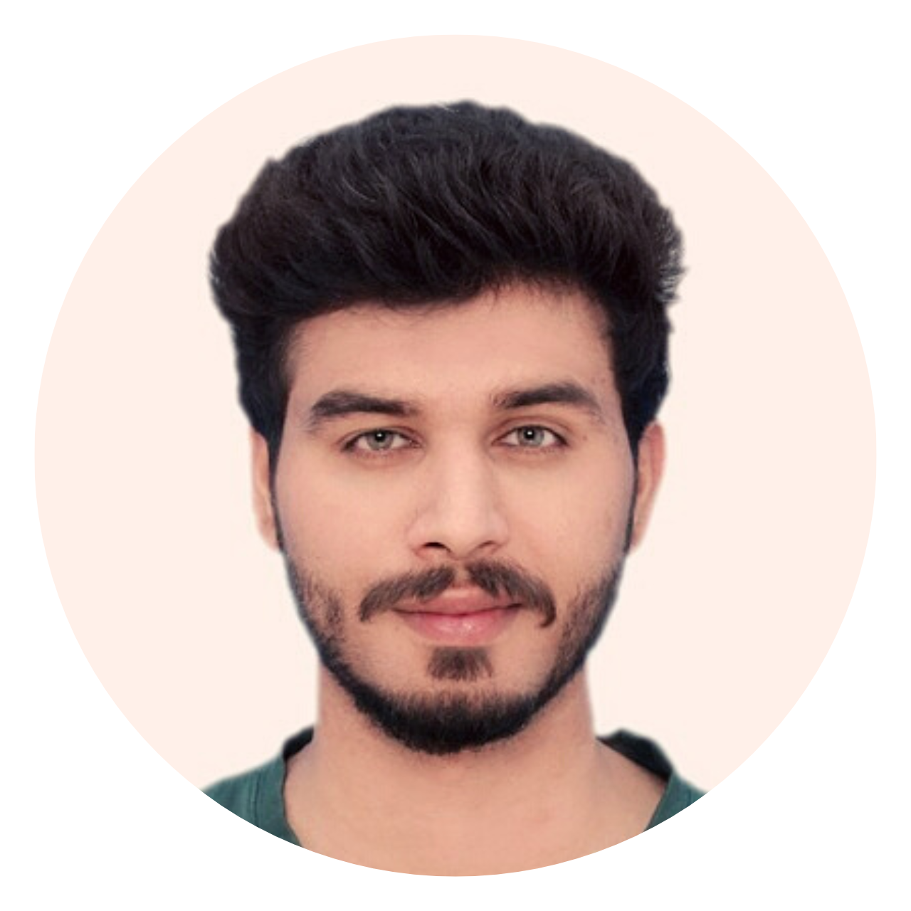

|
Umair Haroon
I am a Predoctoral scholar at the Mathematics and Computer Sciences Department of the
University of Barcelona
specialising in computer vision and deep learning.
Moreover, I completed my Master's Degree in Software Convergence
from Sejong University, Seoul, South Korea. I have achieved an
expert level of conceptual and implementation skills in Deep Learning
for various computer vision applications. Apart from my Master's
research, I designed different kinds of Machine Learning and Deep Learning
models including 2D-CNNs, 3D- CNNs, autoencoders, LSTM and its variants,
and GRU for action, interaction and activity recognition, object detection,
Anomaly detection, image retrieval applications, surveillance video summarization,
and electricity energy consumption prediction data. Currently, I am working
on Food and Nutrition data for Neural Radiance Feild (NeRF), 3D Reconstruction
and Food Volume Estimation applications.
Email /
CV /
Google Scholar /
Linkedin /
Github
|

|
{kind=link}